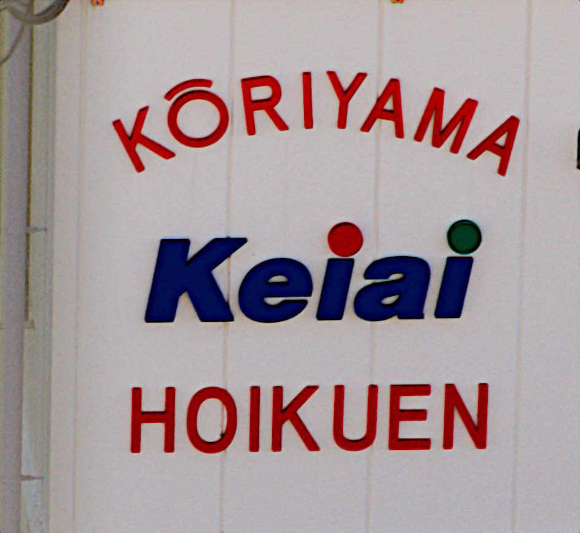

2018 年
10 月 22日 ( 月 )
TAMRON SP AF17-50mm F2.8 XR DiII その後
修理に出していた TAMRON SP AF17-50mm F2.8 XR DiII が返ってきました。状態が悪化して！！
ピント精度 (解像度) 不具合の為、分解修理の上ピント精度調整を致しました。
後ピンを確認致しましたので、お客様よりお預かりのカメラに合わせ出来る限りピント精度を調整いたしました。
他各部点検致しました。
と修理伝票にあるので普通信用しますよね。普通症状が悪化して返ってくるとは誰も思いませんよね。なのに症状が悪化して返ってきました。
下の写真は SIGMA 18-200mm F3.5-6.3 DC を使って AF で近所の保育園の看板を撮ったものの原寸表示するように crop したものです。絞りは開放です。

カメラの限界でノイズが乗っているもののピントはあっていますよね。同じところを TAMRON SP AF17-50mm F2.8 XR DiII を使って AF で撮ると以下のようになります。絞りは開放の F2.8 です。

こちらはボケボケです。ちなみに TAMRON 側の画像が小さいのはレンズの焦点距離が 50mm で SIGMA 側が 200mm だからです。
更にわかるのが遠くの山並みを撮影した写真です。ピントは無限遠のはずです。SIGMA ではわざわざ撮影していませんが TAMRON SP AF17-50mm F2.8 XR DiII を使って AF で撮りました。以下がそうです。もちろん等倍表示されるように crop しています。

これで修理調整しましたと言われて信じることができるでしょうか。
これから再修理を依頼する予定です。その際スプレッドシートで作った合焦試験仕様書も添付し記入するよう求めています。これが未記入もしくは無視されたらまた未テストでレンズが返却されたものと理解し、二度と TAMRON 製品は購入しないつもりですし、人には購入するなと言うつもりです。
そうなるかどうかは TAMRON 次第です。
注) 撮影は全て三脚を用いレリーズスイッチを使用しブレには最大限の配慮をしています。
レンズがこんな調子なので以前書いた三脚搬送システムは未テストです。レンズが治ってきたら撮影ついでにやってきます。もしレンズが治らずに返ってきたら TAMRON SP AF17-50mm F2.8 XR DiII はゴミの日に破棄します。定価 ¥55,000 のゴミ……売価はもっと安いとはいえ……
- 戻る
- OrzBruford